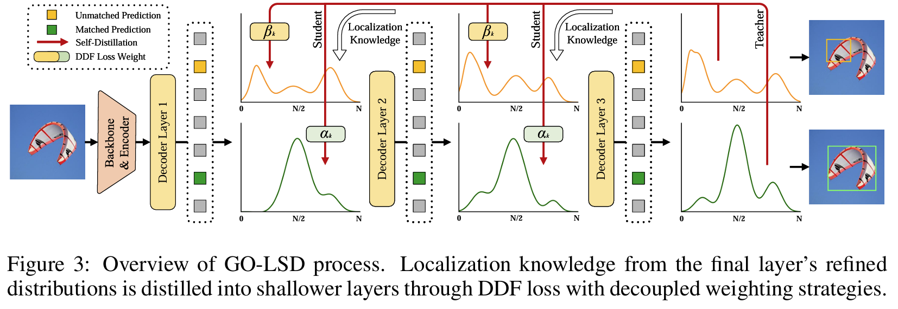

Pertinent Machine Learning Papers
-
Policy Adaptation via Language Optimization: Decomposing Tasks for Few-Shot Imitation
BibTex
url=https://arxiv.org/pdf/2408.16228
@inproceedings{myers2024palo,
title={Policy Adaptation via Language Optimization: Decomposing Tasks for Few-Shot Imitation},
author={Myers, Vivek and Zheng, Chunyuan and Mees, Oier and Fang, Kuan and Levine, Sergey},
booktitle={8th Annual Conference on Robot Learning}
year={2024}}
Summary
The method proposed, Policy Adaptation via Language Optimization (PALO), aims to enable few-shot adaptation of pre-trained language-conditioned robot policies to new, unseen tasks. The key insight is to leverage vision-language models (VLMs) to decompose high-level instructions into smaller, more manageable subtasks, which the robot can execute using its existing knowledge. This approach circumvents the need for extensive fine-tuning on new tasks, which is often infeasible due to the high cost of collecting large-scale teleoperated demonstrations. Instead, PALO relies on the semantic understanding provided by VLMs to propose candidate decompositions of the task, using a small set of demonstrations as a calibration set to guide this decomposition process. The method then optimizes over these decompositions and selects the one that minimizes validation error on the given demonstrations. The core of the approach involves task decomposition through language. Given a high-level task instruction, the VLM generates a set of candidate decompositions that break the task into sequential subtasks. These subtasks are designed to align with the robot's prior training, leveraging its existing capabilities. Each candidate decomposition is evaluated to find the optimal one that can guide the robot to successfully complete the task. The evaluation process involves rolling out the pre-trained policy on the candidate decompositions and computing the cost based on the mean squared error between the robot's predicted actions and the actions demonstrated by the expert. By minimizing this error, PALO identifies the sequence of language subtasks that most effectively bridges the robot's prior knowledge with the new task requirements. An important aspect of PALO is the consideration of when to transition between subtasks. The method introduces an additional variable to represent the time steps allocated to each subtask, recognizing that the execution of each subtask may vary depending on the initial state and the environment's stochasticity. This variable is optimized alongside the task decomposition to ensure the robot executes the sequence of subtasks in a manner that fits the dynamics of the specific task instance. This joint optimization of subtasks and their timing is critical for adapting to long-horizon, multi-step tasks that require a precise and fluid combination of actions. PALO operates under two key assumptions: first, that the low-level subtasks required for the new task are present within the robot's prior training, and second, that the VLM can generate decompositions that are consistent with the semantics of the task in the given environment. These assumptions are essential for the method's success, as they ensure that the robot can use its pre-trained policy to execute the proposed subtasks effectively. By optimizing within the language space rather than directly fine-tuning policy parameters, PALO enables rapid adaptation with significantly fewer demonstrations, making it a sample-efficient approach to handling a variety of complex, unseen robotic manipulation tasks. They also found that hierarchical decomposition to subtasks as high level and low level subtasks help further improve performance. This paper shows that learning generalizable low level skills and knowning how to break down high level OoD instructions into low level InD skills helps.
Problem Improving robot adaptability to new tasks with minimal demonstrations by leveraging vision-language models to semantically decompose complex instructions into executable subtasks.
Images

-
Concept Learning with Energy-Based Models
BibTex
url=https://arxiv.org/pdf/1811.02486
@article{mordatch2018concept,
title={Concept learning with energy-based models},
author={Mordatch, Igor},
journal={arXiv preprint arXiv:1811.02486},
year={2018}}
Summary
This paper presents a framework that uses Energy-Based Models (EBMs) to learn, identify, and generate abstract concepts from events in an environment. The core idea is that each concept is represented by an energy function, which takes a state trajectory (the sequence of entity behaviors over time), an attention mask (focusing on relevant entities in the event), and a concept code (parameters representing the concept) as inputs. The energy function returns a scalar energy value that indicates how well the given event configuration aligns with the specified concept. Low energy means the event satisfies the concept, while high energy signals a mismatch. The approach leverages inference-time optimization, which occurs dynamically during task execution rather than relying on pre-trained, fixed models. By minimizing the energy during inference, the model can either generate new events that fit the concept or identify existing events that match it. This method is more flexible than traditional learning approaches, as it adapts to new situations on the fly by adjusting the event parameters in real-time. The technique operates within a meta-learning framework, where the model generalizes its learning across tasks and environments. Once the energy function is trained, it can be reused in different contexts without retraining. This makes it particularly effective for tasks requiring few-shot learning, where the model needs to generalize from just a few examples. By observing a small set of demonstration events, the model predicts future states and identifies key entities through attention. This is formulated as a maximum likelihood estimation problem to maximize the probability of the observed states given the concept. The framework also employs a relational network architecture in the energy function, enabling it to model interactions between multiple entities, such as spatial or temporal relationships. This allows the model to understand and generate complex multi-entity dynamics, such as objects being "inside" or moving "slowly." To improve sampling during inference, the model uses a KL-divergence objective that refines the sampling process. This objective minimizes the difference between the biased sampling distribution (due to the truncated inference steps) and the true distribution of real-world events. This ensures that the generated samples during inference are realistic and align closely with the learned concepts. Finally, the model supports concept transfer across environments. Once a concept is learned, it can be transferred and applied in new environments, such as transferring concepts learned in a 2D environment to a 3D robot simulation. This is achieved by manually mapping representations between environments and using the learned energy function as a cost function in the new environment’s optimization process. In summary, the framework combines energy-based modeling, inference-time optimization, relational networks, few-shot learning, KL-divergence sampling refinement, and cross-environment concept transfer. These techniques enable the model to generalize from limited demonstrations, handle complex multi-entity concepts, and adapt to new tasks and environments, all while efficiently identifying or generating events that fit learned abstract concepts.
Problem The problem being solved is learning abstract concepts from a few demonstrations and being able to generate or identify similar concepts in new events using energy-based models
Images


-
Learning Iterative Reasoning through Energy Diffusion
BibTex
url=https://openreview.net/pdf?id=CduFAALvGe
@inproceedings{du2024ired,
title={Learning Iterative Reasoning through Energy Diffusion},
author={Du, Yilun and Mao, Jiayuan and Tenenbaum, Joshua B},
booktitle={Forty-first International Conference on Machine Learning}
year={2024}}
Summary
The paper "Learning Iterative Reasoning through Energy Diffusion" introduces IRED, a novel framework for solving reasoning and decision-making tasks by formulating them as energy-based optimization problems. The method focuses on learning an energy function E_\theta(x, y) that models the constraints between inputs x and outputs y, allowing the model to solve tasks via iterative optimization. A key innovation of IRED is its use of annealed energy landscapes. Instead of learning a single complex energy landscape, the model learns a sequence of smoother energy functions that progressively sharpen. This gradual refinement helps avoid local minima and allows for more effective optimization, improving the model's ability to solve complex tasks. The energy minimization process is adaptive, meaning the number of optimization steps during inference is adjusted based on the problem's difficulty. This enables IRED to solve tasks beyond its training distribution, such as more challenging Sudoku puzzles, large matrix completion problems, and complex pathfinding tasks. The training process incorporates two key supervision techniques: score function supervision and energy landscape supervision. Score function supervision addresses instability in energy-based model training by directly optimizing the gradients of the energy function, resulting in more stable and faster training. Energy landscape supervision ensures that the energy function can effectively distinguish between correct and incorrect outputs by using negative sample mining, which forces the model to assign higher energy to invalid outputs, sharpening the energy landscape. IRED’s model architecture consists of a neural network that learns the energy function. During inference, the model performs energy minimization over the learned energy function to find the optimal output. This process is iterative, where the model uses gradient-based optimization to minimize the energy landscape progressively. The key feature here is that this iterative optimization is done on a sequence of annealed energy landscapes, making the search for the optimal solution more effective and efficient. IRED outperforms traditional methods in reasoning tasks across continuous and discrete spaces, as well as planning problems. It generalizes well to more difficult instances of these tasks by dynamically adjusting its computational effort during inference, making it a robust and versatile framework for a wide range of reasoning problems.
Problem The main problem solved is developing a framework that learns to reason across different tasks by using energy-based optimization, enabling generalization to more complex problems beyond its training distribution
Images

-
Attention is not all you need: Pure attention loses rank doubly exponentially with depth
BibTex
url=https://proceedings.mlr.press/v139/dong21a/dong21a.pdf
@inproceedings{dong2021attentionNotAllYouNeed,
title={Attention is not all you need: Pure attention loses rank doubly exponentially with depth},
author={Dong, Yihe and Cordonnier, Jean-Baptiste and Loukas, Andreas},
booktitle={International Conference on Machine Learning},
year={2021}}
Summary
The authors introduce a novel way to analyze self-attention networks (SANs) through what they call "path decomposition." This approach breaks down a SAN's output into a sum of smaller terms, where each term represents a path through different attention heads across layers. Think of attention heads as gateways, and a path is like choosing one gateway per layer to pass through. This decomposition allows them to study how information flows through the network and how the rank collapse phenomenon occurs. The paper presents a rigorous mathematical analysis of how pure attention networks (without skip connections or MLPs) process information. They prove that these networks have a strong inductive bias toward making all tokens uniform, which manifests as a doubly exponential convergence to a rank-1 matrix with network depth. A rank-1 matrix means all output rows are identical, effectively destroying the network's ability to produce diverse outputs for different inputs. The authors then systematically analyze how different architectural components affect this rank collapse. They demonstrate that skip connections play a crucial role in preventing rank collapse by providing paths that preserve input information. MLPs also help counteract rank collapse by potentially increasing the rank through their non-linear transformations, though their effect is less dramatic than skip connections. Interestingly, they prove that layer normalization, another common component in transformers, plays no role in preventing rank collapse. Their methodology involves developing new mathematical tools to analyze the convergence rates of these networks. They introduce concepts like the `1,∞-composite norm and derive bounds on how quickly the residual (the difference between the output and its rank-1 approximation) decreases with network depth. The analysis carefully tracks how the interaction between stochastic attention matrices and value transformations affects the network's output rank. The authors also develop a theoretical framework to understand why transformers work in practice despite the potential for rank collapse. They show that transformer networks effectively operate as ensembles of shallow networks due to skip connections, with shorter paths carrying more predictive power than longer ones. This insight provides a new perspective on transformer architecture design and suggests ways to make these networks more effective.
Problem The paper discusses how pure self-attention networks (without skip connections or MLPs) suffer from "rank collapse" - their output converges doubly exponentially to a rank-1 matrix as network depth increases, meaning all output vectors become identical copies of each other, severely limiting the network's ability to produce diverse outputs.
Images

-
π0: A Vision-Language-Action Flow Model for General Robot Control
BibTex
url= https://www.physicalintelligence.company/download/pi0.pdf
@inproceedings{black2024pi0,
title={π0: A Vision-Language-Action Flow Model for General Robot Control},
author={Black, Kevin and Brown, Noah and Driess, Danny and Esmail, Adnan and Equi, Michael and Finn, Chelsea and Fusai, Niccolo and Groom, Lachy and Hausman, Karol and Ichter, Brian and Jakubczak, Szymon and Jones, Tim and Ke, Liyiming and Levine, Sergey and Li-Bell, Adrian and Mothukuri, Mohith and Nair, Suraj and Pertsch, Karl and Shi, Lucy Xiaoyang and Tanner, James and Vuong, Quan and Walling, Anna and Wang, Haohuan and Zhilinsky, Ury},
booktitle={Physical Intelligence Company},
year={2024}}
Summary
The authors present π0, a vision-language-action (VLA) Flow Matching model designed to make robots more versatile and capable of handling diverse manipulation tasks. The model takes multiple RGB camera images (2-3 per robot), language commands, and the robot's joint state as input, and outputs action sequences that control the robot at 50Hz (one action every 20ms). These actions can control complex robot configurations with up to 18 dimensions to handle multiple arms and mobile bases. The key innovation lies in their training approach, which mirrors the successful paradigm used in large language models: pre-training on diverse, large-scale data followed by task-specific fine-tuning. This approach helps address fundamental challenges in robot learning: data scarcity, limited generalization, and lack of robustness. The model architecture builds upon the PaliGemma vision-language model and incorporates flow matching to generate continuous robot actions. A crucial architectural innovation is the "action expert" - a separate set of weights dedicated to handling robotics-specific inputs and outputs. This design allows the model to leverage pre-trained vision-language knowledge while maintaining precise control over robot movements. The model processes multiple camera views, language commands, and robot state information to generate high-frequency action sequences for dexterous manipulation. The training process involves two key phases. In pre-training, they use over 10,000 hours of robot data from 7 different robot configurations and 68 diverse tasks, combined with existing open-source datasets. This creates a broad foundation of manipulation skills. The post-training phase then uses high-quality, task-specific data to refine the model for particular applications. This two-phase approach is crucial: the diverse pre-training data helps the model learn to recover from mistakes and handle varied situations, while the post-training data teaches it to execute tasks efficiently and fluently. A major strength of their approach is its ability to handle complex, multi-stage tasks. The model can be guided either through direct language commands from humans or through a high-level policy that breaks down complex tasks into simpler subtasks. This enables the system to perform sophisticated behaviors like folding multiple articles of clothing, cleaning tables while appropriately sorting items between trash and dishes, and assembling boxes - tasks that require both physical dexterity and strategic planning.
Problem Robot learning currently faces three major challenges: data scarcity which limits training, limited generalization across different manipulation tasks and robots, and lack of robustness to handle unexpected situations and environmental variations in real-world settings.
Images
-
LoRA vs Full Fine-tuning: An Illusion of Equivalence
BibTex
url=https://arxiv.org/pdf/2410.21228
@article{shuttleworth2024loravft,
title={LoRA vs Full Fine-tuning: An Illusion of Equivalence},
author={Shuttleworth, Reece and Andreas, Jacob and Torralba, Antonio and Sharma, Pratyusha},
journal={arXiv preprint arXiv:2410.21228},
year={2024}}
Summary
The paper "LoRA vs Full Fine-Tuning: An Illusion of Equivalence" examines the structural and behavioral differences between Low-Rank Adaptation (LoRA) and full fine-tuning of pre-trained language models. Although LoRA matches full fine-tuning performance with fewer trainable parameters, the paper reveals that these methods produce fundamentally different solutions. The authors find that LoRA introduces "intruder dimensions"—high-ranking singular vectors orthogonal to pre-trained vectors—which do not appear in full fine-tuning. This structural divergence impacts model behavior, causing LoRA models to forget more of the pre-training distribution and adapt less robustly in continual learning scenarios. Despite similar performance on target tasks, LoRA-fine-tuned models exhibit reduced generalization due to these intruder dimensions. Full fine-tuning, on the other hand, preserves the alignment with pre-trained singular vectors, maintaining spectral similarity and higher effective rank in weight matrices. The study also highlights that even when LoRA uses a high-rank configuration, its effective rank remains lower than that of full fine-tuning. This limitation points to LoRA's underutilization of parameter space, explaining its struggles with complex tasks. Furthermore, an experiment isolating matrix B in LoRA—where only B is trained while A remains fixed—shows a sharp reduction in intruder dimensions. This suggests that the matrix product BA amplifies spectral differences, contributing to the issue. The authors conclude that while LoRA is computationally efficient, its distinct parameter updates lead to reduced generalization unless higher ranks or stabilizing strategies are employed. This insight emphasizes the trade-offs between LoRA’s parameter efficiency and the robustness of full fine-tuning.
Problem The paper analyzes whether fine-tuning pre-trained language models using LoRA yields solutions equivalent to those obtained through full fine-tuning, particularly by examining their structural differences, generalization behaviors, and spectral properties.
Images


-
Differential Transformer
BibTex
url= https://arxiv.org/pdf/2410.05258
@article{ye2024diffT,
title={Differential Transformer},
author={Ye, Tianzhu and Dong, Li and Xia, Yuqing and Sun, Yutao and Zhu, Yi and Huang, Gao and Wei, Furu},
journal={arXiv preprint arXiv:2410.05258},
year={2024}}
Summary
The Differential Transformer (DIFF Transformer) is a novel enhancement to the standard Transformer architecture designed to improve the efficiency and accuracy of attention mechanisms in large language models. Traditional Transformers often struggle with attention allocation, frequently focusing on irrelevant parts of the input context, a phenomenon referred to as attention noise. This misallocation can hinder their performance in tasks that require precise retrieval of key information, especially in long-context scenarios. The DIFF Transformer introduces a unique differential attention mechanism that calculates attention scores by subtracting one softmax attention map from another. This mechanism starts by dividing the query and key vectors into two groups, producing separate softmax attention maps for each group. The attention scores are then derived from the difference between these maps, effectively canceling out shared noise. This process enhances the model's focus on relevant context while minimizing distractions, similar to how noise-canceling technology works by subtracting ambient noise from a signal. The resulting attention pattern is sparser and more precise, which helps the model prioritize crucial information. This differential attention mechanism can be seamlessly integrated with the existing multi-head attention framework, where each head independently performs this subtraction-based attention (delta). The learnable scalar λ controls the degree of noise cancellation and adapts throughout training to optimize performance. This method leads to more efficient attention operations without significantly increasing computational complexity. Experimentally, the DIFF Transformer has demonstrated superior performance over traditional Transformers across a variety of tasks, including language modeling and key information retrieval. It also shows reduced attention noise and improved focus, making it robust for long-sequence processing and complex scenarios.
Problem The Differential Transformer aims to address the issue of excessive attention to irrelevant context in standard Transformers by introducing a mechanism that enhances focus on relevant information while reducing attention noise.
Images


-
nGPT: Normalized Transformer with Representation Learning on the Hypersphere
BibTex
url= https://arxiv.org/pdf/2410.01131
@article{loshchilov2024ngpt,
title={ngpt: Normalized transformer with representation learning on the hypersphere},
author={Loshchilov, Ilya and Hsieh, Cheng-Ping and Sun, Simeng and Ginsburg, Boris},
journal={arXiv preprint arXiv:2410.01131},
year={2024}}
Summary
The nGPT method enhances the standard Transformer by incorporating a normalization strategy that constrains all vectors involved—such as embeddings, MLP, attention matrices, and hidden states—to have unit norm on a hypersphere. This normalization ensures that matrix-vector multiplications can be interpreted as cosine similarities, bounded between -1 and 1, which eliminates the need for weight decay and stabilizes training. In nGPT, each input token is represented on the surface of a hypersphere, and the model iteratively adjusts its position with updates determined by attention and MLP layers. These updates are controlled by trainable eigen learning rates, represented as diagonal elements in a variable-metric matrix. The updates are followed by normalization steps, which act as retraction steps in Riemannian optimization, keeping the vectors on the hypersphere and maintaining consistency across layers. The attention mechanism in nGPT applies normalization to the query and key vectors after projecting them, ensuring that their dot products represent controlled, bounded similarities. This adjustment also modifies the softmax scaling to restore variance, improving the model's stability. In the MLP block, similar normalization is applied, with scaling factors introduced to maintain the impact of non-linearities like the SiLU activation. The method has demonstrated significant efficiency gains, requiring 4 to 20 times fewer training steps to achieve the same accuracy as conventional Transformers, depending on context length. This approach simplifies training by removing the need for additional normalization layers and weight decay, thus optimizing performance for large-scale language models.
Problem The nGPT model addresses the problem of improving training stability and efficiency in Transformers by normalizing all vectors (embeddings, attention matrices, etc.) on a hypersphere, leading to faster convergence and better representation learning
Images

-
Mastering Atari, Go, Chess and Shogi by Planning with a Learned Model
BibTex
url=https://www.nature.com/articles/s41586-020-03051-4
@article{schrittwieser2020muzero,
title={Mastering atari, go, chess and shogi by planning with a learned model},
author={Schrittwieser, Julian and Antonoglou, Ioannis and Hubert, Thomas and Simonyan, Karen and Sifre, Laurent and Schmitt, Simon and Guez, Arthur and Lockhart, Edward and Hassabis, Demis and Graepel, Thore and others},
journal={Nature},
year={2020}}
Summary
In the context of MuZero, the value represents the expected cumulative reward of a state, essentially summing up future rewards over a horizon, discounted to account for their diminishing significance over time. The reward indicates the immediate benefit or outcome of a specific action, and the policy defines the strategy for selecting the best action at any given state. Monte Carlo Tree Search (MCTS) is a planning algorithm that explores possible future action sequences in a tree-like structure. It evaluates the outcomes of actions by simulating hypothetical scenarios, balancing the exploration of new possibilities with the exploitation of known good actions, and refines the policy and value estimates to guide the agent's decision-making. MuZero is a model-based reinforcement learning algorithm designed to operate without explicit knowledge of the environment's dynamics. It focuses on predicting three key quantities essential for planning and decision-making: policy, value, and reward. Instead of reconstructing the environment or modeling its full dynamics, MuZero uses a learned latent representation optimized for these predictions, enabling efficient planning and generalization across diverse tasks. The core of the method consists of three interconnected functions: a representation function, a dynamics function, and a prediction function. The representation function processes historical observations to produce a hidden state, which serves as the input to the planning process. The dynamics function updates this hidden state iteratively based on hypothetical actions, generating a new state and an immediate reward prediction. The prediction function uses the hidden state at each step to compute the policy and value estimates required for decision-making. MuZero integrates these components with Monte Carlo Tree Search (MCTS) to enable planning. The search algorithm explores hypothetical trajectories, using the learned model to simulate transitions and evaluate states. The outputs of the MCTS—improved policy and value estimates—are used as targets to refine the model through end-to-end training. The training minimizes prediction errors for policy, value, and reward across sampled trajectories from a replay buffer, using a combined loss function that includes regularization. A key innovation of MuZero is its latent state representation, which is free from constraints to match the actual environment state or observation. This allows the model to efficiently encode only the information necessary for accurate planning, reducing computational overhead and improving scalability. The latent state evolves through recurrent unrolling during planning and training, adapting to the task's requirements dynamically.
Problem The paper addresses the problem of constructing agents capable of effective planning in environments where the dynamics are unknown or too complex to model explicitly, a limitation that has hindered the application of traditional planning and model-based reinforcement learning methods in real-world and visually rich domains.
Images

-
The Surprising Effectiveness of Test-Time Training for Abstract Reasoning
BibTex
url=https://ekinakyurek.github.io/papers/ttt.pdf
@article{akyurek2024ttt,
title={The Surprising Effectiveness of Test-Time Training for Abstract Reasoning},
author={Aky{\"u}rek, Ekin and Damani, Mehul and Qiu, Linlu and Guo, Han and Kim, Yoon and Andreas, Jacob},
journal={arXiv e-prints},
year={2024}}
Summary
The method revolves around Test-Time Training (TTT), a dynamic approach for improving the reasoning abilities of large language models (LLMs) on novel abstract reasoning tasks. TTT involves updating the model parameters during inference by creating an auxiliary dataset derived from the test inputs and optimizing a loss function specific to this test-time dataset. This enables the model to adapt specifically to the task at hand without requiring extensive offline retraining or access to large labeled datasets. To begin, the base model is fine-tuned on synthetic tasks similar to those expected at test time. This initial fine-tuning provides the model with a foundation of reasoning capabilities. At inference, TTT takes over and constructs a test-time training dataset by applying two main techniques: leave-one-out tasks and rule-based augmentations. The leave-one-out tasks involve generating synthetic examples by holding out one input-output pair at a time, effectively creating smaller training datasets for the model to learn from. Rule-based augmentations apply geometric transformations (e.g., rotations, flips, or color permutations) to enhance the diversity and richness of the test-time data while preserving the task's underlying structure. During TTT, the method employs Low-Rank Adaptation (LoRA) for parameter-efficient fine-tuning. LoRA introduces task-specific adapters that are trained on the generated test-time dataset while keeping most of the model's original parameters frozen. This approach allows the model to adapt quickly and effectively to each new task without losing its general pre-trained knowledge. Inference is further enhanced through an augmented pipeline. The model predicts outputs not only on the original task representation but also on its transformed versions generated during the augmentation process. Each transformation is applied to the task's input and outputs, and predictions are made under these altered conditions. After inference, the transformed predictions are reverted back to the original space using inverse transformations. To consolidate predictions, the method uses a hierarchical voting strategy. In the first stage, predictions are grouped by transformation type, and the most frequent outputs are identified within each group. In the second stage, the top candidates from each transformation are aggregated, and the final prediction is chosen based on overall consistency across all transformations. This voting mechanism ensures that the model's output reflects a self-consistent understanding of the task. The results of this approach demonstrate significant gains in accuracy on the ARC dataset. TTT enables models to match or exceed the performance of traditional neuro-symbolic approaches while remaining purely neural. The combination of carefully crafted test-time data generation, efficient parameter adaptation, and robust inference strategies forms the core of this highly effective methodology.
Problem The paper addresses the problem of improving large language models' ability to solve novel abstract reasoning tasks by using test-time training (TTT) to adapt model parameters during inference, with significant improvements on the challenging Abstraction and Reasoning Corpus (ARC).
Images
-
Combining Induction and Transduction for Abstract Reasoning
BibTex
url=https://arxiv.org/pdf/2411.02272
@article{li2024transdvInd,
title={Combining Induction and Transduction for Abstract Reasoning},
author={Li, Wen-Ding and Hu, Keya and Larsen, Carter and Wu, Yuqing and Alford, Simon and Woo, Caleb and Dunn, Spencer M and Tang, Hao and Naim, Michelangelo and Nguyen, Dat and others},
journal={arXiv preprint arXiv:2411.02272},
year={2024}}
Summary
This paper explores the interplay between induction and transduction in solving abstract reasoning tasks within the challenging Abstract Reasoning Corpus (ARC). Induction focuses on inferring a latent function that maps inputs to outputs, while transduction predicts outputs directly without an explicit function representation. Using synthetic ARC-style datasets generated with large language models, the authors show that these approaches are not only distinct but strongly complementary—induction handles tasks requiring symbolic reasoning and compositionality, while transduction excels in perceptual tasks like pattern recognition. Surprisingly, even when trained on identical datasets and architectures, the two methods excel on different subsets of problems, and their combination via ensembling yields superior performance. The study also introduces a scalable methodology for generating ARC-like problems by crafting Python programs (called seeds) that encapsulate abstract concepts and generate inputs and outputs tailored to these concepts. These seeds are expanded into large datasets through language model-assisted remixing, allowing for diverse and realistic problem generation. The findings challenge traditional views that favor induction or transduction exclusively, demonstrating that their strengths depend on problem characteristics. The paper also highlights the limitations of existing neural architectures in achieving true sample-efficient generalization and suggests a path forward by developing representations that intertwine symbolic and neural paradigms. This work sets new benchmarks for ARC while bridging gaps in understanding the roles of induction and transduction in abstract reasoning.
Problem The paper addresses the challenge of robust few-shot generalization in abstract reasoning by exploring and comparing two neural approaches—induction and transduction—for solving tasks in the Abstract Reasoning Corpus (ARC)
Images
-
Grounding Video Models to Actions through Goal Conditioned Exploration
BibTex
url=https://arxiv.org/pdf/2411.07223
@article{luo2024gvm,
title={Grounding Video Models to Actions through Goal Conditioned Exploration},
author={Luo, Yunhao and Du, Yilun},
journal={arXiv preprint arXiv:2411.07223},
year={2024}}
Summary
The authors propose a framework to bridge the gap between pretrained large video models and actionable continuous policies for embodied agents. They aim to use video models, which encapsulate rich information about visual dynamics and semantics, as a guiding tool for autonomous action generation in environments without relying on manually annotated demonstrations or external rewards. This approach leverages goal-conditioned exploration, where the visual states generated by the video models act as goal images to guide the agent's exploration and task execution. At the core of the method is a goal-conditioned policy that predicts the actions required to achieve each intermediate visual goal in a video sequence. The video model synthesizes a series of images representing the desired task trajectory based on an initial observation and a task description. The agent then executes actions predicted by the policy in the environment, attempting to reach the synthesized visual goals. These interactions generate data, including real-world image-action pairs, which are stored in a replay buffer and used to refine the policy iteratively. The key innovation lies in grounding the video model directly into the action space without explicit action annotations, thereby aligning the visual goals with real-world dynamics. A significant challenge addressed in the paper is exploration efficiency. Initially, random exploration is used to populate the replay buffer with diverse state-action data. To further enhance exploration, the authors propose two strategies: action chunking and periodic random action bootstrapping. Action chunking involves predicting sequences of actions over a defined horizon rather than single-step actions, ensuring temporal coherence and avoiding repetitive or contradictory actions. This approach also reduces computational overhead by enabling more effective exploration in fewer model-forward passes. Meanwhile, random action bootstrapping ensures the policy does not stagnate in limited state spaces by periodically injecting random exploratory actions into the buffer, encouraging broader state-space coverage.
Problem The problem being solved is how to ground large pretrained video models into actionable continuous policies for embodied agents to achieve tasks in diverse environments without requiring annotated action demonstrations or rewards
Images
-
D-FINE: Redefine Regression Task in DETRs as Fine-grained Distribution Refinement
BibTex
url=https://openreview.net/pdf?id=MFZjrTFE7h
@article{peng2024dfine,
title={D-FINE: Redefine Regression Task in DETRs as Fine-grained Distribution Refinement},
author={Peng, Yansong and Li, Hebei and Wu, Peixi and Zhang, Yueyi and Sun, Xiaoyan and Wu, Feng},
journal={ICLR},
year={2024}}
Summary
The paper introduces D-FINE, a novel framework for real-time object detection that redefines the bounding box regression process in Detection Transformer (DETR) models. Traditional methods rely on fixed-coordinate predictions for bounding boxes, which struggle with modeling localization uncertainty and often lead to suboptimal performance. D-FINE addresses these challenges by transforming the regression task into a probabilistic iterative refinement process that significantly improves localization accuracy. The framework is designed to be computationally efficient while achieving high precision, making it ideal for real-time applications. At the core of D-FINE is Fine-grained Distribution Refinement (FDR), which replaces traditional fixed-coordinate bounding box predictions with iterative refinements of probability distributions. Initially, the bounding box is predicted as a reference point with basic center coordinates and dimensions. FDR transforms these predictions into probability distributions for the distances from the center to each edge. Each decoder layer refines these distributions in a residual manner, progressively narrowing the range of uncertainty and aligning the predictions closer to the ground truth. The iterative process enables fine-grained adjustments that capture both large and small discrepancies in localization, resulting in precise bounding boxes even in challenging scenarios. A specially designed weighting function adapts the adjustments based on prediction accuracy, ensuring flexible and robust optimization. Complementing FDR is Global Optimal Localization Self-Distillation (GO-LSD), a self-distillation mechanism that transfers refined localization knowledge from deeper layers to shallower ones. This process ensures that early layers produce better initial predictions, reducing the complexity of subsequent refinements and accelerating convergence. By aligning the outputs of earlier layers with the more accurate predictions of later layers, GO-LSD fosters a collaborative learning process across the model's depth, enhancing both efficiency and accuracy without increasing training costs or parameter counts. D-FINE integrates additional architectural optimizations to streamline computationally intensive components, maintaining a balance between speed and accuracy. Despite these efficiency-driven changes, the synergy between FDR and GO-LSD mitigates any potential performance losses, resulting in a framework that outperforms state-of-the-art detectors. This redefinition of the regression task not only improves precision but also makes the model more adaptable to various DETR architectures, demonstrating its versatility and scalability. By addressing the fundamental limitations of traditional regression-based approaches, D-FINE sets a new benchmark in object detection. Its probabilistic, iterative approach to bounding box refinement and innovative self-distillation mechanism ensure precise localization, computational efficiency, and scalability across different tasks and datasets. This makes D-FINE a significant advancement in the field of real-time object detection.
Problem The paper addresses the challenges in bounding box regression and knowledge distillation for real-time object detection by introducing D-FINE, which enhances detection precision through Fine-grained Distribution Refinement (FDR) and Global Optimal Localization Self-Distillation (GO-LSD), significantly improving both accuracy and efficiency in DETR-based models.
Images
 -
Bootstrapping reinforcement learning with imitation for vision-based agile flight
BibTex
url=https://arxiv.org/pdf/2403.12203
@article{xing2024iltorl,
title={Bootstrapping reinforcement learning with imitation for vision-based agile flight},
author={Xing, Jiaxu and Romero, Angel and Bauersfeld, Leonard and Scaramuzza, Davide},
journal={CoRL},
year={2024}}
Summary
The proposed method combines the strengths of Reinforcement Learning (RL) and Imitation Learning (IL) to train visuomotor policies for agile quadrotor flight. The key challenge addressed is the inefficiency of RL in high-dimensional visual input spaces and the limited generalizability of IL policies due to reliance on expert demonstrations. The approach introduces a three-phase framework: RL-based teacher policy training, IL-based student policy distillation, and RL-based adaptive fine-tuning. In the first phase, a teacher policy is trained using RL with privileged state information. This state-based policy leverages data such as position, velocity, orientation, and gate-relative positions, which are not available to the drone in real-time. The RL training employs Proximal Policy Optimization (PPO) and uses a carefully designed reward function. This reward includes components for progress through gates, perception alignment, action smoothness, body rate minimization, gate-passing success, and collision penalties. By optimizing these factors, the teacher policy achieves high performance and robustness in simulation. The second phase transitions from privileged state information to vision-based inputs by distilling the teacher policy into a student policy using IL. The student policy directly maps visual inputs, such as RGB images or gate corner projections, to control actions. Temporal Convolutional Networks (TCNs) process sequences of visual inputs to encode spatial-temporal features, which are then passed through a multi-layer perceptron (MLP) to output actions. The IL objective minimizes the error between the teacher and student actions over a dataset of teacher-generated trajectories. This phase creates a performant baseline policy capable of operating on real-world visual inputs. In the third phase, the student policy is fine-tuned through vision-based RL to improve performance and robustness. This stage addresses the limitations of IL, such as covariate shift and lack of exploration, by allowing the policy to interact with the environment. A performance-constrained adaptation algorithm is introduced to mitigate the stability-plasticity dilemma, where policies risk forgetting learned behaviors during exploration. The algorithm adjusts learning rates and policy update constraints based on performance metrics, ensuring smooth and stable fine-tuning. Additionally, an asymmetric actor-critic architecture is used, where the critic has access to privileged state information to guide the actor's learning. This setup improves sample efficiency and accelerates convergence. The combined framework is validated in both simulation and real-world environments. It demonstrates that the bootstrapped policy outperforms standalone RL and IL methods in robustness, performance, and sample efficiency. The integration of IL for rapid baseline policy learning and RL for adaptive fine-tuning allows the approach to overcome the inherent challenges of training visuomotor policies for agile drone flight, such as handling high-dimensional inputs, adapting to unseen scenarios, and ensuring low-latency control. This makes the method a significant step forward in enabling autonomous flight systems to perform complex tasks using only visual data.
Problem The paper addresses the challenge of training high-performance visuomotor policies for agile drone flight using only visual inputs, by proposing a framework that combines the sample efficiency of Imitation Learning (IL) with the exploration capability of Reinforcement Learning (RL), overcoming limitations of both methods in isolation.
Images
-
Abandoning objectives: Evolution through the search for novelty alone
BibTex
url= https://stars.library.ucf.edu/cgi/viewcontent.cgi?article=2529&context=facultybib2010
@article{lehman2011novelty,
title={Abandoning objectives: Evolution through the search for novelty alone},
author={Lehman, Joel and Stanley, Kenneth O},
journal={Evolutionary computation},
year={2011},
publisher={MIT Press}
}
Summary
The paper introduces a novel approach called *novelty search*, which challenges the traditional reliance on objective-based fitness functions in evolutionary computation. Instead of measuring progress toward a predefined goal, novelty search rewards the discovery of new and unique behaviors, circumventing common issues like deception and local optima that often plague objective-based methods. This method redefines the search process by focusing solely on behavioral diversity, using a novelty metric to evaluate how distinct an individual’s behavior is compared to others in a behavior space. Sparseness in this space, calculated as the average distance to the k-nearest neighbors, determines the novelty score. Behaviors deemed sufficiently novel are added to a growing archive, which guides the search toward unexplored areas. The paper demonstrates novelty search through experiments using the NeuroEvolution of Augmenting Topologies (NEAT) algorithm, which evolves artificial neural networks (ANNs) to control agents. NEAT’s gradual complexification of network structures aligns naturally with novelty search, as simpler behaviors are explored first, setting the stage for progressively more complex behaviors to emerge. This combination allows novelty search to navigate behavior space methodically, avoiding the pitfalls of random exploration. Experiments in maze navigation and biped locomotion tasks illustrate the effectiveness of this approach. In maze navigation, novelty search outperformed traditional objective-based methods by avoiding dead-end paths that appeared promising under a goal-oriented fitness function but led to failure. In biped locomotion, novelty search evolved controllers that walked farther and more stably than those optimized explicitly for walking performance. These results highlight a counterintuitive yet crucial insight: ignoring the objective can lead to better solutions than directly pursuing it, particularly in problems with deceptive or rugged search landscapes. Novelty search represents a significant shift in evolutionary computation, promoting open-ended exploration as an alternative to objective optimization. It offers a robust tool for solving complex problems that require discovering intermediate stepping stones, which are often missed by traditional methods. By prioritizing behavioral diversity, novelty search opens the door to innovative solutions across a range of domains, challenging the assumption that objectives are always necessary for effective search.
Problem The paper addresses the problem of overcoming the limitations of objective-based search in evolutionary computation by proposing novelty search as an alternative approach to mitigate deception and local optima in complex search spaces
Images
-
Representation alignment for generation: Training diffusion transformers is easier than you think
BibTex
url=https://arxiv.org/pdf/2410.06940v2
@article{yu2024repa,
title={Representation alignment for generation: Training diffusion transformers is easier than you think},
author={Yu, Sihyun and Kwak, Sangkyung and Jang, Huiwon and Jeong, Jongheon and Huang, Jonathan and Shin, Jinwoo and Xie, Saining},
journal={arXiv preprint arXiv:2410.06940},
year={2024}}
Summary
The paper proposes a novel regularization technique called REPresentation Alignment (REPA) to address the inefficiencies in training large-scale diffusion models for generative tasks. Traditional diffusion models struggle with learning high-quality internal representations, which is a critical bottleneck for improving generation quality. REPA mitigates this issue by explicitly aligning the noisy hidden state representations of the diffusion model with clean image representations derived from external, pretrained visual encoders, such as DINOv2. The core idea is that by leveraging these powerful external representations, the diffusion models can bypass the need to learn such representations independently, leading to faster convergence and better generation quality. The REPA approach works by introducing an additional loss term that maximizes the similarity between the diffusion model's intermediate representations and the pretrained external representations. Specifically, a multilayer perceptron (MLP) is used as a projection head to map the diffusion model’s hidden states to a representation space that aligns with the pretrained encoder’s output. This alignment is enforced patch-wise, ensuring that even noisy inputs maintain semantically meaningful information throughout the denoising process. REPA is integrated into the standard diffusion training objectives, such as velocity prediction, with a regularization coefficient controlling the trade-off between representation alignment and denoising. The authors conducted an extensive empirical analysis, demonstrating that the REPA-aligned models achieve significantly faster convergence compared to vanilla diffusion models. For instance, REPA-enabled SiT-XL/2 models matched the performance of a standard model trained for 7 million steps in just 400,000 steps, achieving a 17.5× speed-up. The alignment also reduces the semantic gap between diffusion models and pretrained visual encoders, enabling the diffusion models to achieve better feature representation and generation quality simultaneously. Key findings include improved Fréchet Inception Distance (FID) scores, with REPA-trained models achieving state-of-the-art results, such as an FID of 1.42 with classifier-free guidance on ImageNet. Interestingly, the authors found that aligning only the early layers of the diffusion model is sufficient to achieve these gains. This allows later layers to focus on capturing high-frequency details necessary for image generation. They also showed that REPA’s benefits are robust across different model sizes and encoder configurations, with better alignment leading to superior performance in both generation and linear probing tasks. The scalability of REPA was further validated, as its relative improvement became more pronounced with larger model sizes.
Problem improve the training efficiency and generation quality of diffusion models by introducing a simple regularization technique, REPresentation Alignment (REPA), which aligns internal representations of diffusion models with pretrained visual encoders
Images
-
Diffusion Forcing: Next-token Prediction Meets Full-Sequence Diffusion
BibTex
url=https://openreview.net/pdf?id=yDo1ynArjj
@inproceedings{chen2024df,
title={Diffusion Forcing: Next-token Prediction Meets Full-Sequence Diffusion},
author={Chen, Boyuan and Mons{\'o}, Diego Mart{\'\i} and Du, Yilun and Simchowitz, Max and Tedrake, Russ and Sitzmann, Vincent},
booktitle={The Thirty-eighth Annual Conference on Neural Information Processing Systems},
year={2024}}
Summary
The paper introduces Diffusion Forcing (DF), a novel training and sampling paradigm designed to unify the strengths of next-token prediction models and full-sequence diffusion models for sequence generation. Traditional next-token models excel in generating variable-length sequences and maintaining causality but often fail in long-horizon scenarios, where errors compound over time. Full-sequence diffusion models, on the other hand, perform well for continuous data and support guided sampling, but their non-causal architectures limit them to fixed-length sequences and prevent flexible guidance. Diffusion Forcing bridges these gaps by introducing a method where each token in a sequence is associated with an independent noise level, allowing flexible denoising schedules and causal sequence modeling. The Diffusion Forcing framework works by treating noise addition as a form of partial masking. During training, a causal architecture, such as an RNN, is used to model sequences where each token can be noised independently. The model learns to denoise these sequences by predicting the clean tokens from their noisy counterparts, while maintaining a causal dependency between past and future tokens. The key innovation lies in enabling the model to operate across a 2D grid where one axis represents time and the other axis represents noise levels. This approach allows the model to simultaneously learn temporal relationships and handle varying degrees of uncertainty across the sequence. During sampling, Diffusion Forcing employs a flexible noise scheduling mechanism, where tokens are denoised incrementally along the time axis. By allowing future tokens to remain noisier than immediate ones, the model maintains uncertainty about distant events, which can then be guided dynamically. The framework introduces Monte Carlo Guidance (MCG), a technique that samples multiple potential future trajectories and uses their gradients to guide the sampling of the current token. This approach ensures that the generated sequences align with high-reward trajectories, making it particularly effective for decision-making and planning tasks. The authors demonstrate the capabilities of Diffusion Forcing across diverse applications, including video generation, sequential decision-making, and imitation learning. In video generation tasks, the method produces temporally consistent rollouts that remain stable even beyond the training horizon, outperforming both next-token prediction models trained with teacher forcing and causal full-sequence diffusion models. For decision-making tasks, such as reinforcement learning in 2D maze environments, Diffusion Forcing achieves superior performance by leveraging MCG and its ability to model causal uncertainty. The results show that it significantly outperforms baselines like Diffuser, a state-of-the-art diffusion-based planner, especially when directly executing generated actions without relying on handcrafted controllers. In imitation learning, Diffusion Forcing proves highly robust, enabling long-horizon visuomotor tasks where memory is essential. By incorporating latent states that summarize past observations, it can handle scenarios where immediate observations are ambiguous or noisy. The framework also allows for pretraining on unlabeled video data, further expanding its applicability to tasks requiring both action generation and video synthesis.
Problem unifying the strengths of next-token prediction models and full-sequence diffusion models for probabilistic sequence generation, by introducing a novel framework called Diffusion Forcing that enables efficient, stable, and flexible generation of variable-length sequences while supporting long-horizon guidance
Images
-
Training Large Language Models to Reason in a Continuous Latent Space
BibTex
url=https://arxiv.org/pdf/2412.06769
@article{hao2024coconut
title={Training large language models to reason in a continuous latent space},
author={Hao, Shibo and Sukhbaatar, Sainbayar and Su, DiJia and Li, Xian and Hu, Zhiting and Weston, Jason and Tian, Yuandong},
journal={arXiv preprint arXiv:2412.06769},
year={2024}}
Summary
The paper introduces Coconut (Chain of Continuous Thought), a novel paradigm that allows large language models (LLMs) to reason in a continuous latent space rather than being confined to language space. Traditional reasoning in LLMs relies on generating explicit reasoning processes as sequences of natural language tokens, a method known as chain-of-thought (CoT) reasoning. While effective, CoT is inefficient because most tokens are generated for linguistic fluency rather than contributing to actual reasoning, and critical reasoning steps often require disproportionately complex computations. Coconut addresses these limitations by bypassing the need for explicit token-based reasoning and instead uses the model's hidden states as latent representations of reasoning steps. In the Coconut framework, the model alternates between "language mode" and "latent mode." During language mode, the model operates as a standard language model, generating tokens autoregressively. In latent mode, the last hidden state of the model, referred to as a "continuous thought," is fed directly as the next input embedding, eliminating the need for intermediate language token generation. This modification allows the reasoning process to unfold entirely within the latent space, leveraging the model's internal representations to perform computations. The transition between these modes is marked by special tokens, `
` (beginning of latent thought) and ` ` (end of latent thought), enabling seamless switching. To train the model, the authors implement a multi-stage curriculum inspired by CoT reasoning. Initially, the model is trained with standard CoT examples, where reasoning steps are explicitly expressed in language. In subsequent stages, language reasoning steps are progressively replaced by continuous thoughts. This gradual replacement allows the model to learn how to encode and process reasoning steps in the latent space while maintaining coherence with language-based reasoning. The training objective is the standard cross-entropy loss, applied to the remaining language tokens, with the latent thoughts excluded from the loss calculation. This encourages the model to focus on predicting future reasoning steps rather than compressing information into removed language tokens. The authors evaluate Coconut on a range of reasoning tasks, including math reasoning (GSM8k), logical reasoning (ProntoQA), and a new planning-intensive task, ProsQA. Coconut demonstrates significant improvements in reasoning accuracy and efficiency compared to CoT and other baselines. For example, in ProsQA, which involves reasoning over directed acyclic graphs (DAGs) to identify correct paths, Coconut achieves higher accuracy while generating fewer tokens during inference. The model's ability to encode multiple potential reasoning paths in the latent space allows it to perform a breadth-first search (BFS)-like reasoning process, progressively narrowing down options rather than committing prematurely to a single path. This capability proves particularly advantageous in tasks that require substantial planning and backtracking. The experiments also reveal that Coconut reduces hallucination (incorrect reasoning paths) and improves the accuracy of final answers compared to CoT. Notably, the multi-stage training curriculum plays a crucial role in these improvements, as removing this curriculum results in significantly degraded performance. The authors further analyze the latent reasoning process and find that it enables the model to prioritize promising reasoning paths while pruning irrelevant ones, mimicking the behavior of search algorithms. This latent reasoning mechanism also enhances the model's ability to plan and evaluate future steps, making it more effective in complex problem-solving scenarios. Problem enabling large language models (LLMs) to reason in a continuous latent space, rather than being constrained to language-based reasoning, by introducing "Coconut" (Chain of Continuous Thought), which enhances reasoning efficiency and accuracy through latent state representations
Images
-
Byte Latent Transformer: Patches Scale Better Than Tokens
BibTex
url=https://arxiv.org/pdf/2412.09871
@article{pagnoni2024blt,
title={Byte Latent Transformer: Patches Scale Better Than Tokens},
author={Pagnoni, Artidoro and Pasunuru, Ram and Rodriguez, Pedro and Nguyen, John and Muller, Benjamin and Li, Margaret and Zhou, Chunting and Yu, Lili and Weston, Jason and Zettlemoyer, Luke and others},
journal={arXiv preprint arXiv:2412.09871},
year={2024}}
Summary
The Byte Latent Transformer (BLT) proposed in this paper is a tokenizer-free architecture designed to overcome the inefficiencies and limitations of tokenization-based large language models (LLMs). Traditional tokenization methods rely on fixed vocabularies and heuristic grouping of bytes into tokens, which introduces biases, inefficiencies, and a lack of robustness to input noise. BLT eliminates this dependency by operating directly on raw bytes and introducing a novel approach that dynamically groups bytes into patches based on their entropy, ensuring that more computational resources are allocated to complex data regions. This dynamic patching mechanism enables BLT to process byte sequences with variable granularity, providing both computational efficiency and scalability. BLT's architecture consists of three main components: a lightweight local encoder, a global latent transformer, and a local decoder. The local encoder processes raw bytes into latent patch representations using a combination of cross-attention and transformer layers. It employs entropy-based patching, where byte groups are formed dynamically based on the next-byte prediction entropy. This approach allows the model to allocate more compute to regions with higher uncertainty and compress predictable regions into larger patches, reducing the overall computational load. The global latent transformer operates on these patch representations, leveraging a block-causal attention mechanism to ensure that patches are processed in a computationally efficient manner while maintaining contextual consistency. Finally, the local decoder reconstructs raw bytes from the latent patch representations, completing the sequence generation process. Training BLT involves a carefully designed curriculum to balance computational efficiency and modeling accuracy. The model is trained on large-scale datasets of raw bytes without relying on tokenization, ensuring end-to-end learning of byte-level representations. BLT introduces several innovations, such as hash n-gram embeddings, which enhance the expressiveness of byte representations by capturing patterns over multiple byte sequences. Additionally, entropy-based patching is implemented using a small autoregressive language model to determine the optimal patch boundaries dynamically, providing a more data-driven approach to byte grouping compared to fixed heuristics like whitespace or stride-based patching. BLT achieves significant improvements in both efficiency and performance. The model demonstrates that it can match or even surpass tokenization-based models like LLaMA in terms of scaling trends, achieving comparable results with up to 50% fewer inference floating-point operations (FLOPs). In a controlled scaling study, BLT models with larger patch sizes not only reduced computational costs but also showed improved performance on downstream tasks. For example, BLT-Entropy models trained with dynamic patching exhibited enhanced long-tail generalization and robustness to noisy inputs compared to tokenization-based baselines. Moreover, BLT outperformed traditional models in tasks requiring fine-grained character-level understanding, such as the CUTE benchmark for sequence manipulation and the Phonology-G2P task. A key finding of the study is that BLT unlocks a new scaling dimension for LLMs. By increasing both the model size and the patch size simultaneously, BLT achieves better scaling trends while maintaining a fixed computational budget. This flexibility enables BLT to adapt to larger training datasets and more complex tasks. Additionally, BLT's robustness to input noise and its ability to generalize to unseen, long-tail data distributions highlight its potential for real-world applications, especially in domains where input data may be noisy or highly variable.
Problem inefficiency and robustness limitations in tokenization-based large language models (LLMs) by introducing a novel tokenizer-free architecture, the Byte Latent Transformer (BLT), which dynamically groups bytes into patches and processes them in a scalable and compute-efficient manner, thereby enabling end-to-end training on raw byte data without relying on a fixed vocabulary
Images
-
FAST: Efficient Action Tokenization for Vision-Language-Action Models
BibTex
url=https://arxiv.org/pdf/2501.09747
@article{pertsch2025fast,
title={FAST: Efficient Action Tokenization for Vision-Language-Action Models},
author={Pertsch, Karl and Stachowicz, Kyle and Ichter, Brian and Driess, Danny and Nair, Suraj and Vuong, Quan and Mees, Oier and Finn, Chelsea and Levine, Sergey},
journal={arXiv preprint arXiv:2501.09747},
year={2025}}
Summary
The paper introduces Frequency-space Action Sequence Tokenization (FAST), a novel method for compressing robot action signals into discrete tokens to improve the training of vision-language-action (VLA) models for robotics. Traditional approaches for tokenizing continuous robotic actions, such as naive binning schemes that discretize each action dimension at each timestep independently, perform poorly for high-frequency and dexterous tasks. These naive methods generate highly redundant tokens with low marginal information between consecutive timesteps, which hinders the training process of autoregressive models. FAST overcomes these limitations by leveraging the Discrete Cosine Transform (DCT), a widely-used frequency-space compression method, to tokenize continuous action sequences in a way that captures the underlying structure of the data while reducing redundancy. FAST operates in several stages. First, raw robotic actions are normalized to bring their values within a consistent range, which improves the robustness of tokenization across datasets with varying action scales. The normalized actions are then transformed into the frequency domain using DCT. This transformation expresses the action signal as a sum of cosine components, where low-frequency components capture the overall structure of the signal, and high-frequency components represent finer details. To compress the signal, insignificant high-frequency components are omitted by applying a scale-and-round operation, resulting in a sparse matrix of DCT coefficients. The sparse matrix is then flattened into a one-dimensional sequence, prioritizing low-frequency components for autoregressive prediction. Finally, the sequence is compressed into dense tokens using byte-pair encoding (BPE), which groups frequently occurring patterns for efficient representation. FAST is computationally efficient and has minimal hyperparameters, requiring only a scaling coefficient for quantization and a vocabulary size for BPE compression. It is also fully invertible, allowing predicted tokens to be decoded back into continuous action sequences. The authors extend this framework to create FAST+, a universal tokenizer trained on a large, diverse dataset of one million robotic action trajectories. FAST+ can be applied as a black-box tokenizer to various robotic datasets, eliminating the need for dataset-specific tuning. The authors evaluate FAST and FAST+ on a range of real-world and simulated robotic tasks, including dexterous tasks like laundry folding, grocery bagging, and T-shirt folding, as well as generalization tasks requiring zero-shot performance in unseen environments. Compared to naive binning tokenization, FAST achieves significantly better compression rates while maintaining high reconstruction accuracy. For example, in high-frequency tasks like T-shirt folding, FAST reduces the number of tokens per action chunk by a factor of 13. This compression enables the training of autoregressive VLA models that scale effectively to large datasets, achieving comparable performance to state-of-the-art diffusion-based VLAs while reducing training time by up to five times. A key finding of the study is that FAST maintains consistent compression across tasks with varying action dimensionalities and frequencies, demonstrating its robustness and adaptability. In zero-shot evaluation tasks, policies trained with FAST tokenization generalize well to new environments, highlighting the effectiveness of its representation. The authors also show that the performance benefits of FAST are most pronounced in high-frequency tasks, where naive tokenization fails entirely due to excessive redundancy.
Problem the problem of inefficiencies in training autoregressive vision-language-action (VLA) models for robotics by introducing a novel tokenization approach called Frequency-space Action Sequence Tokenization (FAST), which compresses continuous robot action signals into discrete tokens using the Discrete Cosine Transform (DCT) for more effective learning of dexterous and high-frequency robotic behaviors
Images
-
Okami: Teaching humanoid robots manipulation skills through single video imitation
BibTex
url=https://openreview.net/pdf?id=URj5TQTAXM
@inproceedings{li2024okami,
title={Okami: Teaching humanoid robots manipulation skills through single video imitation},
author={Li, Jinhan and Zhu, Yifeng and Xie, Yuqi and Jiang, Zhenyu and Seo, Mingyo and Pavlakos, Georgios and Zhu, Yuke},
booktitle={8th Annual Conference on Robot Learning},
year={2024}}
Summary
The paper introduces OKAMI, a two-stage method designed to teach humanoid robots manipulation skills through single video demonstrations of human actions. This approach addresses the challenge of open-world imitation from observation, where robots must learn manipulation tasks without action labels and generalize to new environments with varying object placements and conditions. OKAMI is centered on an object-aware retargeting mechanism that enables humanoid robots to mimic human actions while adapting to the spatial and visual complexities of real-world scenarios. The first stage of OKAMI involves generating a reference plan from the given RGB-D video demonstration. This begins with identifying task-relevant objects using vision-language models like GPT-4V, which leverage commonsense knowledge to recognize objects and their roles in the task. These objects are segmented and tracked throughout the video using visual models like Grounded-SAM. Once task-relevant objects are identified, human motions are reconstructed from the video using an enhanced version of SLAHMR, a motion reconstruction algorithm that captures both full-body and hand poses. OKAMI further refines these hand poses using HaMeR, enabling precise reproduction of fine-grained manipulation behaviors. The reconstructed motions and identified objects are combined to segment the video into subgoals, each corresponding to a key manipulation step. Each subgoal includes information about target and reference objects, motion trajectories, and spatial relations, forming the basis of the reference plan. In the second stage, OKAMI performs object-aware motion retargeting to translate the human actions into robot-executable commands. This involves localizing objects in the test environment using the same vision pipeline, enabling the robot to adapt its actions to new object placements and unseen environments. The retargeting process is factorized into two components: body motions and hand poses. First, the human body motions are mapped to the robot's task space, scaling and adjusting trajectories to account for differences in size and proportion between humans and humanoids. The trajectories are then warped to align with the new object locations. In cases where the spatial relationship between objects changes, the warping process is further refined to ensure accurate manipulation. Next, human hand poses are retargeted to the robot's dexterous hands, allowing the robot to reproduce fine-grained interactions with objects. The final output is a sequence of joint configurations for the robot, computed using inverse kinematics to maintain natural and efficient motions. OKAMI's approach is validated through extensive experiments on a variety of tasks, such as placing a plush toy in a basket, sprinkling salt into a bowl, and closing a laptop. These tasks cover diverse manipulation behaviors, including pick-and-place, pouring, and interacting with articulated objects. OKAMI achieves a 71.7% average task success rate, significantly outperforming baseline methods like ORION, which fail to incorporate human embodiment information. The experiments demonstrate that OKAMI can generalize across varying object layouts and visual backgrounds, even when tested with novel object instances. Additionally, OKAMI's rollout trajectories are used to train closed-loop visuomotor policies through behavioral cloning, enabling the robot to autonomously perform tasks using vision-based observations. These policies achieve an average success rate of 79.2%, highlighting the potential of OKAMI as a data-efficient framework for training robotic policies without the need for labor-intensive teleoperation.
Problem enabling humanoid robots to acquire manipulation skills from a single video demonstration by introducing OKAMI, a method that uses object-aware motion retargeting to translate human actions observed in RGB-D videos into actionable plans and policies adaptable to varying object locations and environmental conditions
Images
-
Population Based Training of Neural Networks
BibTex
url=https://arxiv.org/pdf/1711.09846
@article{jaderberg2017pbt
title={Population based training of neural networks},
author={Jaderberg, Max and Dalibard, Valentin and Osindero, Simon and Czarnecki, Wojciech M and Donahue, Jeff and Razavi, Ali and Vinyals, Oriol and Green, Tim and Dunning, Iain and Simonyan, Karen and others},
journal={arXiv preprint arXiv:1711.09846},
year={2017}}
Summary
Population Based Training (PBT) is a novel optimization algorithm introduced to improve the training of neural networks by jointly optimizing model weights and hyperparameters in an adaptive and dynamic manner. The core idea of PBT is to treat the optimization process as a population-based search, where a population of models is trained in parallel, each with its own set of hyperparameters. Unlike traditional hyperparameter tuning methods, PBT does not rely on predefining a fixed hyperparameter schedule or conducting sequential trials. Instead, it adapts hyperparameters online during training, leveraging the performance of the entire population to guide the optimization process. PBT operates in two main phases: exploitation and exploration. During exploitation, underperforming models in the population are replaced by better-performing ones. This is achieved by copying the weights and hyperparameters of the best-performing models to less successful models. Exploration then introduces diversity into the hyperparameter space by perturbing the hyperparameters of the newly copied models. Perturbation involves applying small random changes or resampling hyperparameters from predefined distributions. This iterative process allows PBT to dynamically refine both model weights and hyperparameters while maintaining a balance between exploiting successful configurations and exploring new ones. The algorithm is asynchronous and decentralized, meaning that population members do not need to wait for the entire population to synchronize before updating. Each member evaluates its performance periodically and decides whether to exploit or explore based on its relative performance in the population. This approach ensures efficient use of computational resources and allows PBT to scale to large populations without significant overhead. PBT was applied to various tasks, including reinforcement learning, supervised learning, and generative modeling, to demonstrate its effectiveness. In reinforcement learning, PBT optimized hyperparameters such as learning rate, entropy cost, and auxiliary loss weights for A3C, UNREAL, and Feudal Networks. It significantly improved learning stability and performance by automatically adapting hyperparameters to non-stationary learning dynamics. For example, PBT increased the average human-normalized performance of reinforcement learning agents on Atari games and DeepMind Lab tasks, achieving faster convergence and higher final performance compared to baseline methods like random search. In supervised learning, PBT was used to train transformer models for machine translation, specifically on the WMT 2014 English-to-German dataset. PBT automatically discovered hyperparameter schedules that matched or exceeded the performance of heavily tuned baselines, improving BLEU scores and reducing training time. For generative adversarial networks (GANs), PBT optimized the learning rates of the generator and discriminator, addressing the instability of GAN training. PBT-trained GANs achieved higher Inception scores than baseline models, highlighting its ability to handle complex, competing objectives. The paper's findings emphasize the versatility and effectiveness of PBT across different domains. Key advantages include its ability to discover adaptive hyperparameter schedules that outperform fixed schedules, its capacity to stabilize training in challenging scenarios, and its efficiency in utilizing computational resources. The experiments also revealed that PBT benefits from the combination of weight copying (exploitation) and hyperparameter perturbation (exploration). This synergy allows PBT to adapt to dynamic training conditions and discover optimal configurations that static methods cannot achieve.
Problem inefficient and suboptimal neural network training caused by static and manually tuned hyperparameter schedules by introducing Population Based Training (PBT), an asynchronous optimization algorithm that dynamically adapts hyperparameters and model weights during training to improve performance and stability across various domains
Images
-
Position: The Platonic Representation Hypothesis
BibTex
url=https://openreview.net/pdf?id=BH8TYy0r6u
@inproceedings{huh2024prh,
title={Position: The Platonic Representation Hypothesis},
author={Huh, Minyoung and Cheung, Brian and Wang, Tongzhou and Isola, Phillip},
booktitle={Forty-first International Conference on Machine Learning},
year={2024}}
Summary
The paper introduces the Platonic Representation Hypothesis, which suggests that as neural networks scale and are trained on diverse data and tasks, their representations converge toward a shared statistical model of reality. This convergence is observed across different architectures, objectives, and modalities, driven by the need to capture the joint distribution of real-world events. The authors provide evidence through kernel alignment and model stitching, showing that networks trained on distinct tasks and datasets produce representations that can be aligned, even across modalities like vision and language. They find that larger, more capable models trained on diverse tasks exhibit greater alignment in their representations, indicating that increased scale and task generality narrow the solution space. This is formalized in their "Multitask Scaling Hypothesis," which posits that as tasks increase, fewer representations satisfy all constraints, leading to more universal and aligned representations. Cross-modal studies also reveal that language and vision models align better as their performance improves, suggesting a trend toward a unified understanding of reality. The authors conclude that this representational convergence is a fundamental property of large-scale neural networks, with implications for transfer learning, general-purpose AI, and interpretability. However, they note limitations such as data biases and modality-specific constraints that could prevent perfect convergence. Ultimately, the paper argues that neural networks are recovering representations of an idealized reality, aligning across tasks, architectures, and modalities as they scale.
Problem representational convergence in artificial intelligence by hypothesizing that different neural networks, trained on diverse objectives and modalities, are converging toward a shared statistical model of reality, which the authors term the "Platonic Representation."
Images